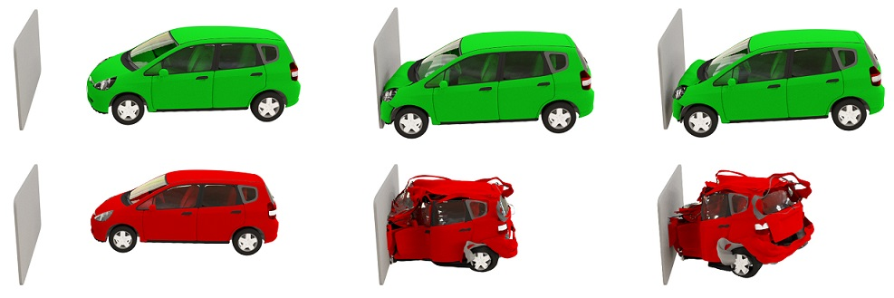

Research Interests
My research interests lie in Computational and Applied mathematics, primarily in time integration of partial differential equations (PDEs), numerical analysis and scientific computing. A large portion of my research has been devoted to the construction, analysis, and implementation of fast, robust and accurate numerical methods for the time integration of multi-physics, multi-rate PDEs arising in engineering and natural sciences. I have also developed and am further developing new numerical techniques for meteorology, numerical weather prediction, computational fluid dynamics, biological systems, combustion, and real-time simulations of complex systems used in visual computing. I am also interested in geometric numerical integration, splitting methods, and scattered data approximation/interpolation problems using mesh-free methods.
Current Research: My current research is supported by NSF grants DMS-2012022 and DMS-2309821 and a startup fund from TTU.
My significant contributions have been in the following themes:
- Time integration of stiff PDEs/evolution equations
- Exponential integrators
- Multirate time integrators
- Development of innovative numerical methods for meteorological models
- Real-time simulations of elastodynamics systems
Below are some simulation videos and pictures resulted from our work for applications in meteorology/weather prediction and visual computing (computer animation of elastodynamics models):

Past Research: Some of my earlier works include
- BVPs arising in the study of transverse vibrations of a hinged beam
- Structure-preserving numerical integration
- Scattered data approximation/interpolation problems using RBFs.